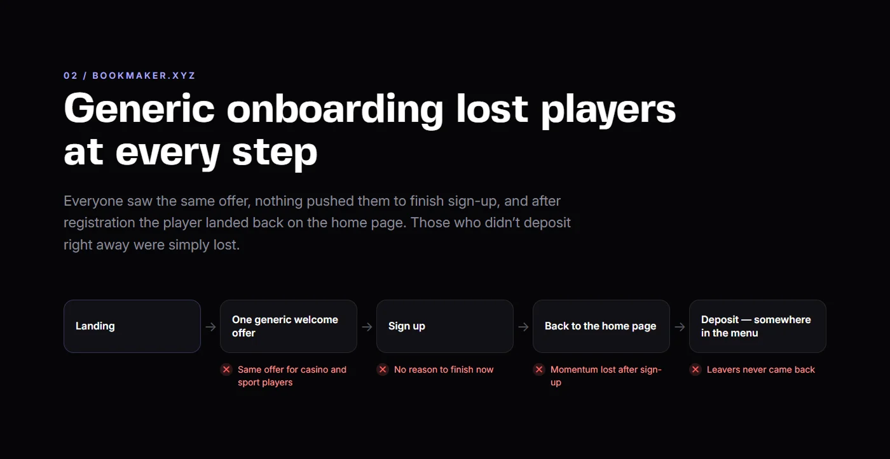
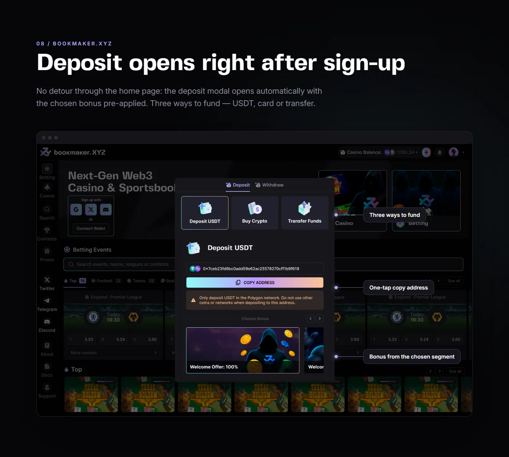
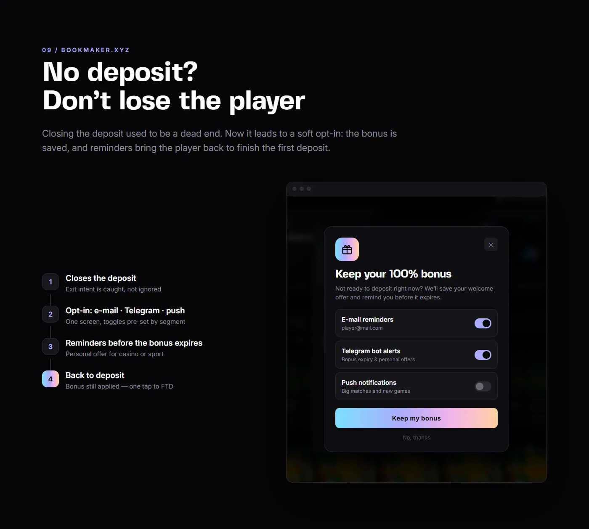
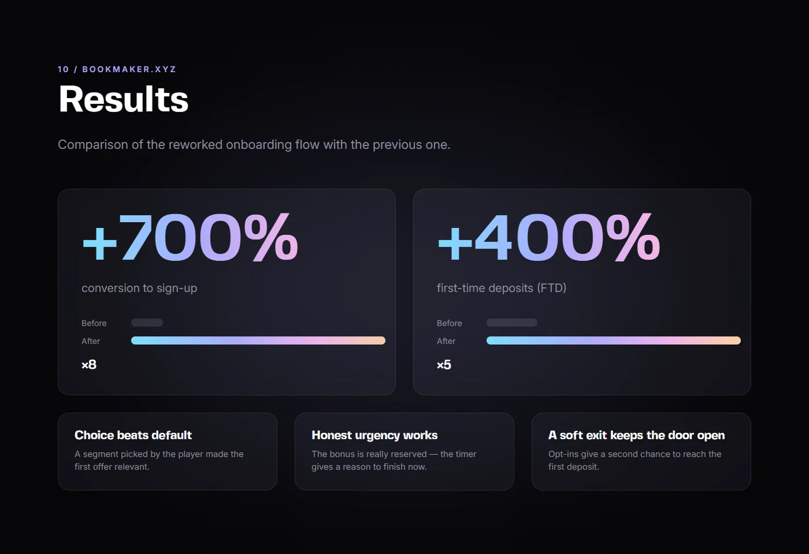
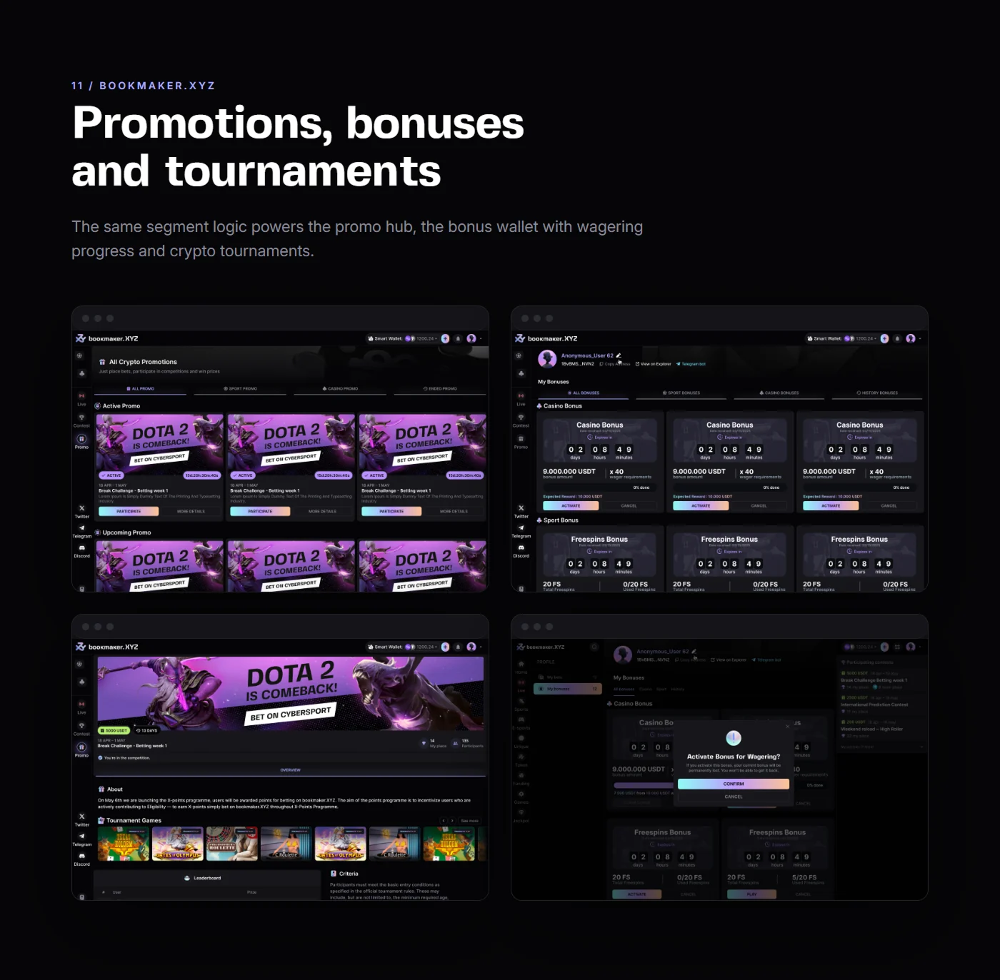
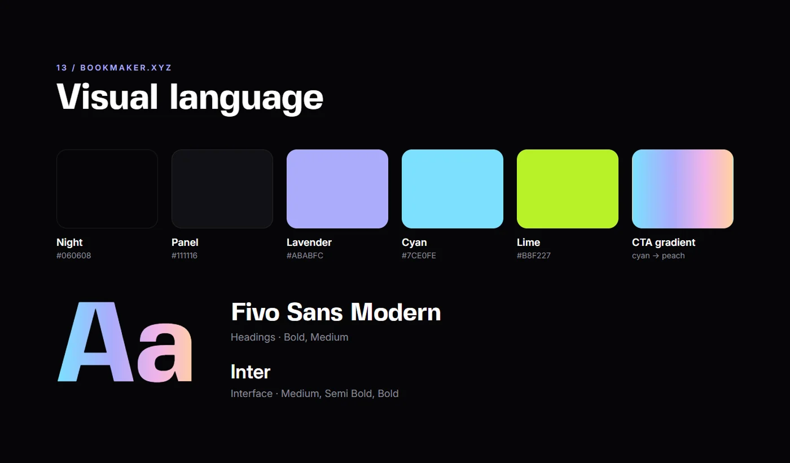

bookmaker.XYZ
Web3-казино и спортбеттинг. Редизайн воронки онбординга
bookmaker.XYZ — Web3-казино и спортбеттинг: игроки подключают кошелёк или соцсеть, пополняют баланс в USDT и ставят на спорт, киберспорт и казино. Я перепроектировал первую сессию — от первого визита до первого депозита.
+700%
Конверсия в регистрацию
+400%
Первые депозиты (FTD)
4
Изменения воронки в продакшене
Задача
Новые игроки отваливались между первым визитом и первым депозитом: один общий онбординг для фанатов казино и спорта, нет срочности и нет способа вернуть ушедших.
Решение
Сегментировать игрока с первого клика — казино или спорт — и вести каждого в своё лобби. Открывать депозит сразу после регистрации с уже выбранным бонусом. Мягкая подписка сохраняет бонус тем, кто ушёл без депозита.
Результат
+700% к конверсии в регистрацию и +400% к первым депозитам. Четыре изменения воронки выпущены в продакшен.









(Следующий кейс)
Caswino
Крипто-казино. UX/UI-дизайн →